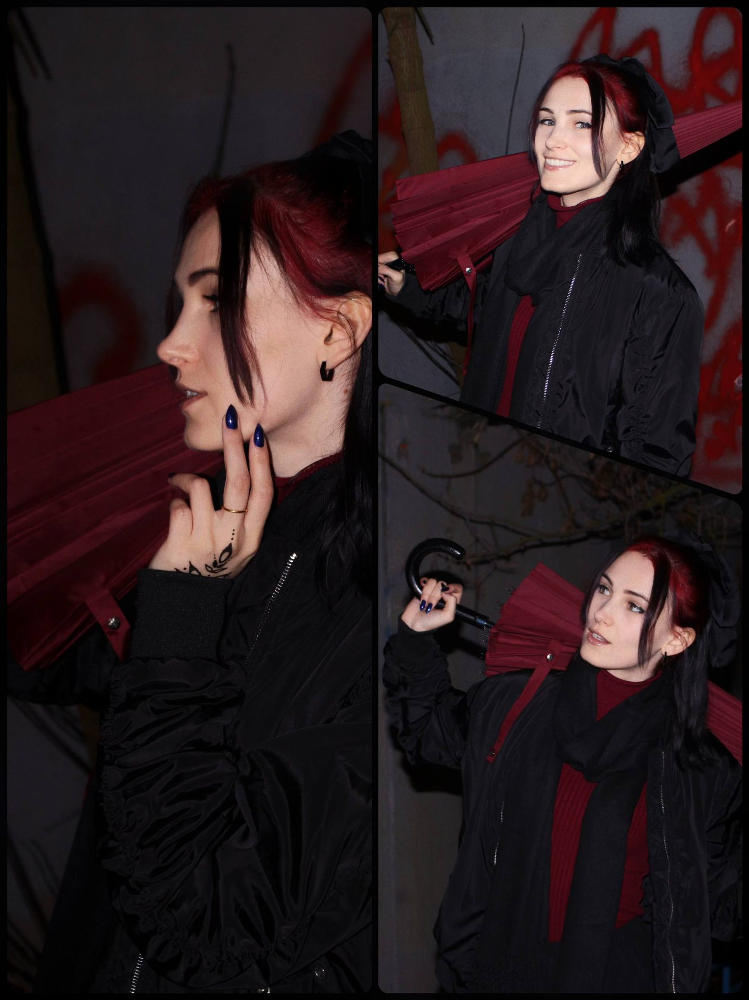
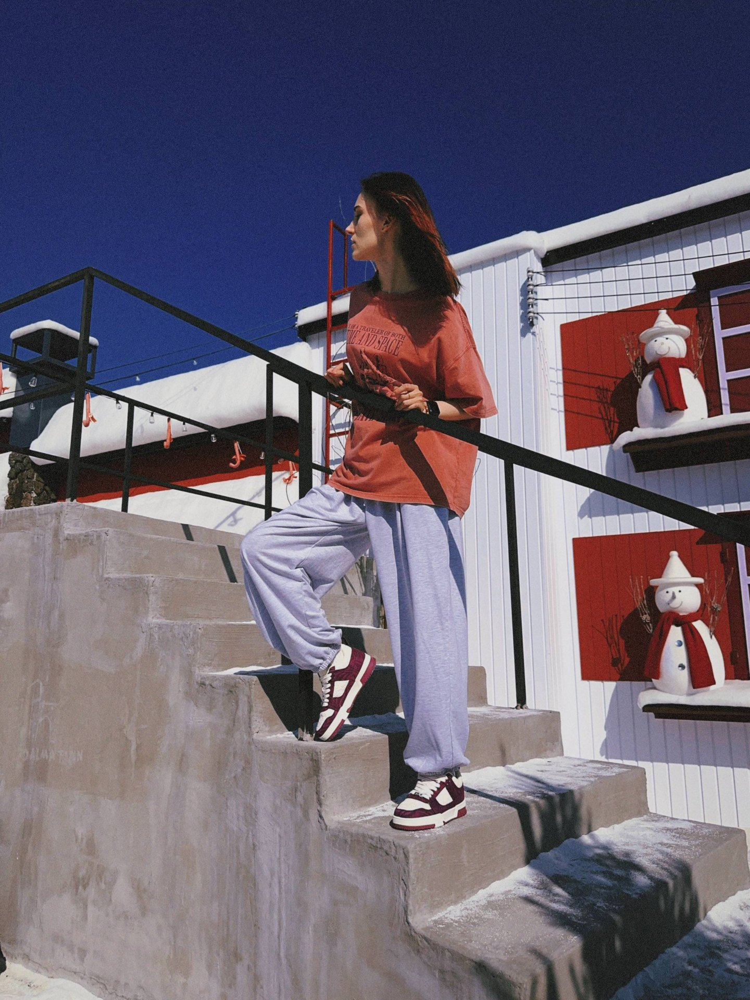
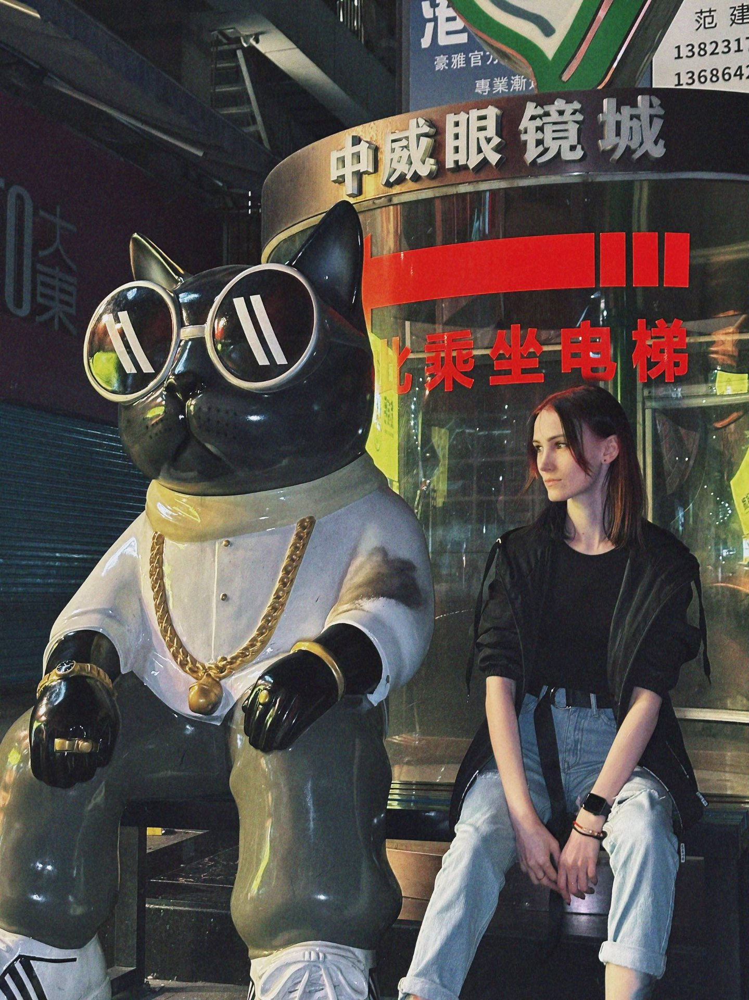

Добрый день уважаемые гости и преподаватели меня зовут Гречишникова Ирина Владимировна
Для меня дизайн — это свобода. Свобода создавать, выражать и исследовать себя.
Можно провести любую линию — неровную, резкую, хаотичную — и это уже будет дизайн. Потому что в основе лежит не форма, а идея и внутреннее состояние. Дизайн — это способ говорить без слов, это отражение внутреннего «я», проявление человека как творца.
Я убеждена, что в дизайне нет границ и нет потолка. Единственное ограничение — это воображение. Именно оно формирует образы, смыслы и атмосферу, которые затем воплощаются в визуальной форме.


Большое влияние на моё восприятие оказала восточная культура, особенно Китай. Я ежегодно возвращаюсь туда и даже прожила там около полугода. Эта среда научила меня видеть гармонию в простоте, ценить пространство, ритм и баланс.
В своей работе я также обращаюсь к кинематографу. Меня вдохновляет эстетика Дэвида Линча — его работа с цветом, напряжением и атмосферой. В частности, в своём проекте я стремилась передать ощущение глубоких синих и бархатных красных тонов, навеянных фильмами «Синий бархат» и «Твин Пикс».
Не менее важное влияние оказал нуар и визуальная драматургия Фрэнсиса Форда Копполы, особенно его работа в фильме «Крёстный отец». Это про свет, тень, глубину и характер.
Из мира современного искусства меня вдохновляют Лучо Фонтана с его концепцией пространства и разрыва формы, а также Эрик Булатов, чьи работы объединяют графику, смысл и визуальную силу.
Все эти направления и впечатления переплетаются в моих проектах, формируя уникальный визуальный язык, в котором дизайн становится не просто решением задачи, а способом самовыражения.
